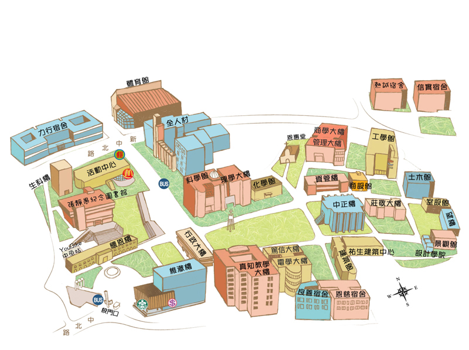
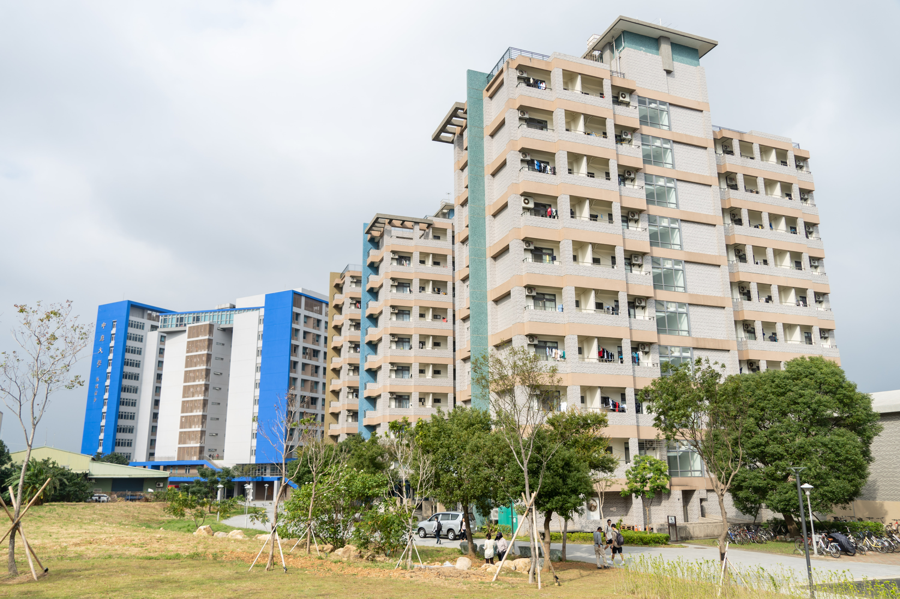
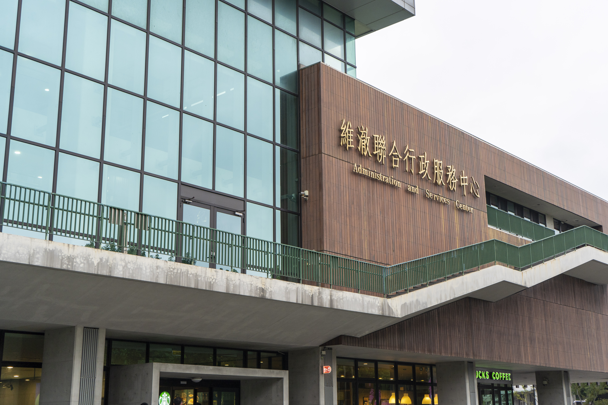
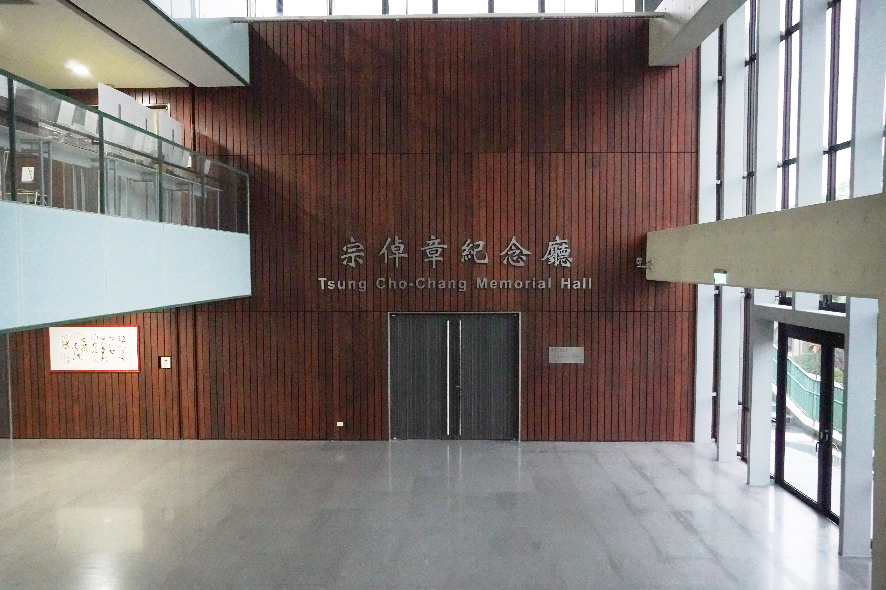
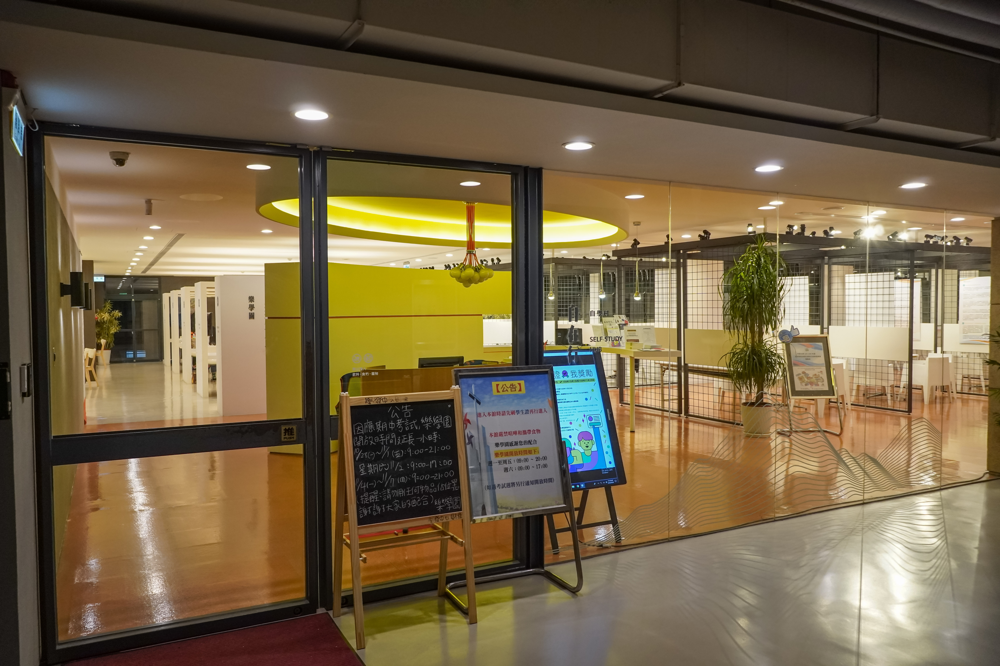
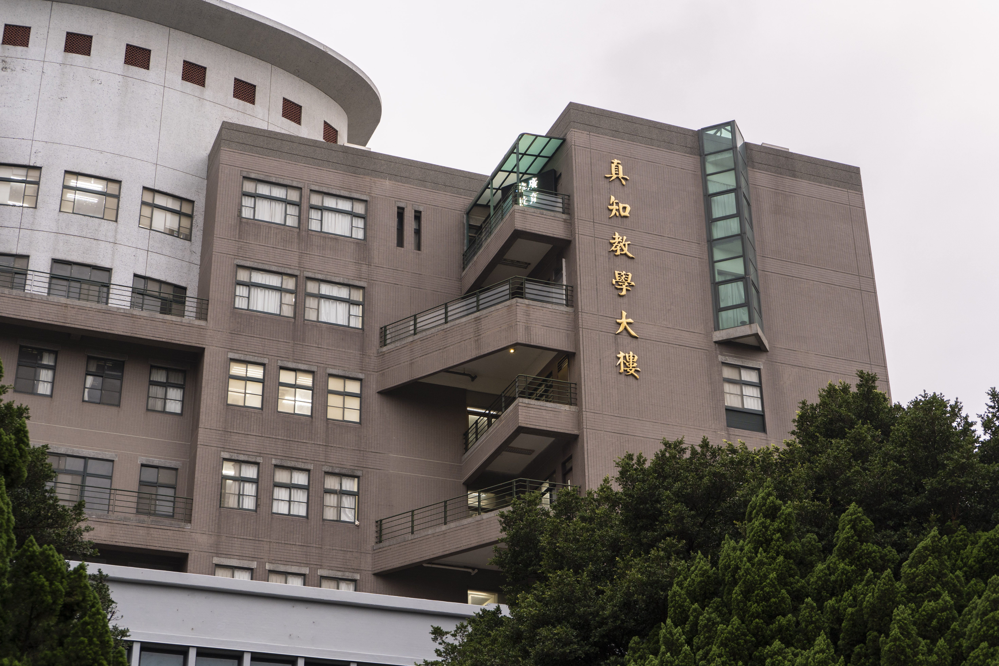
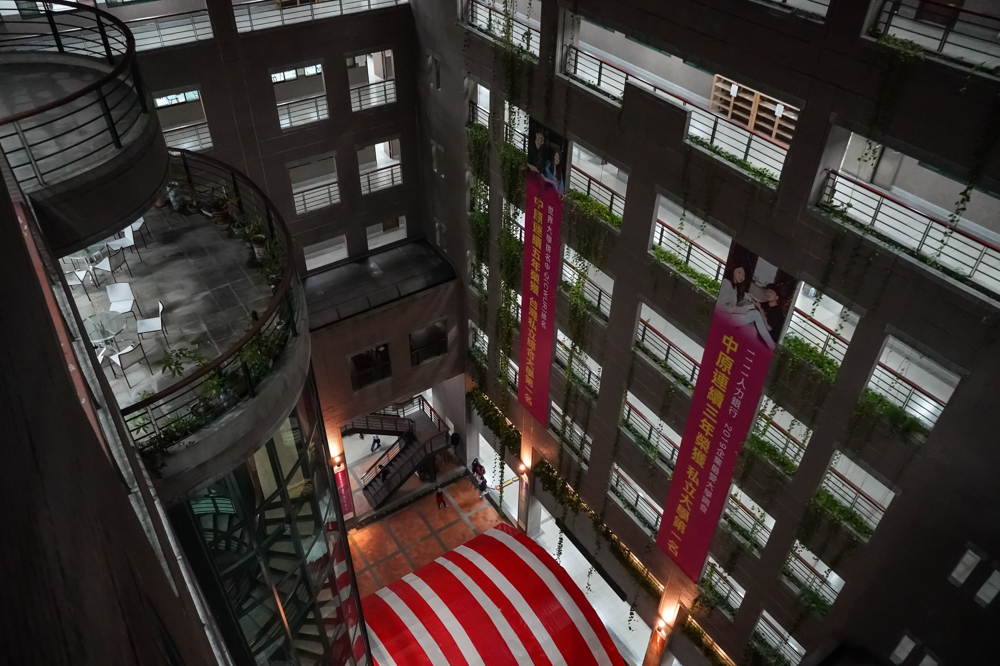
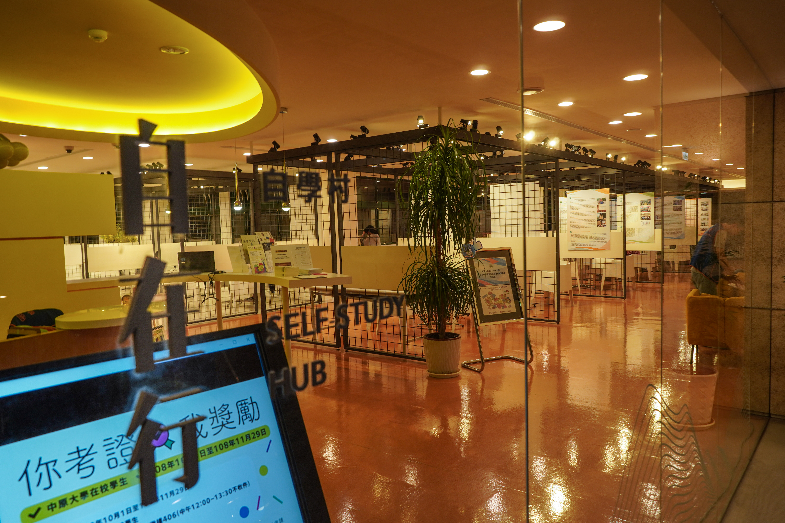
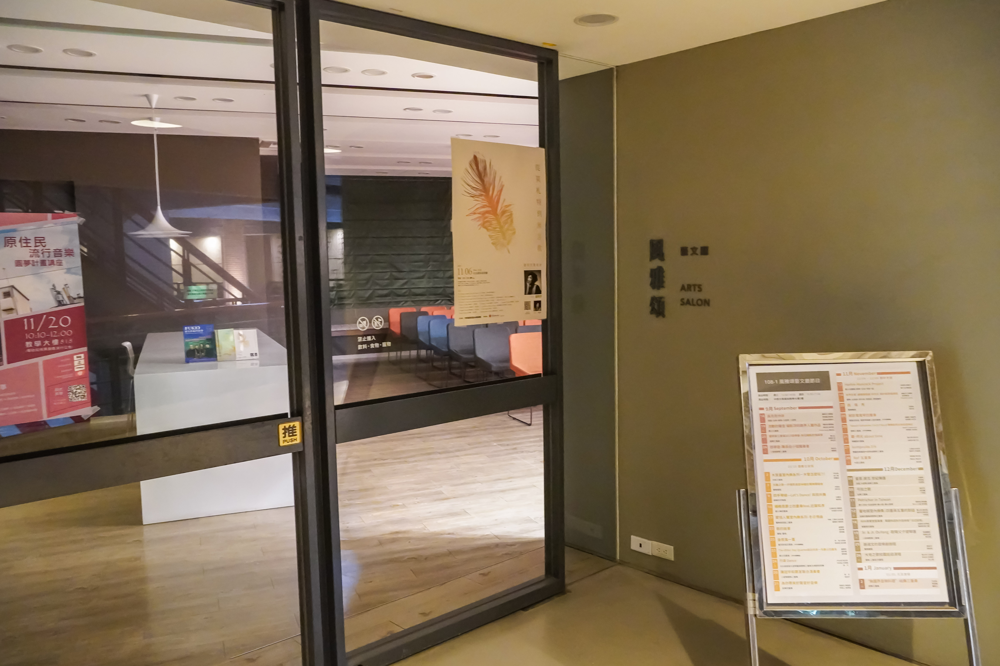
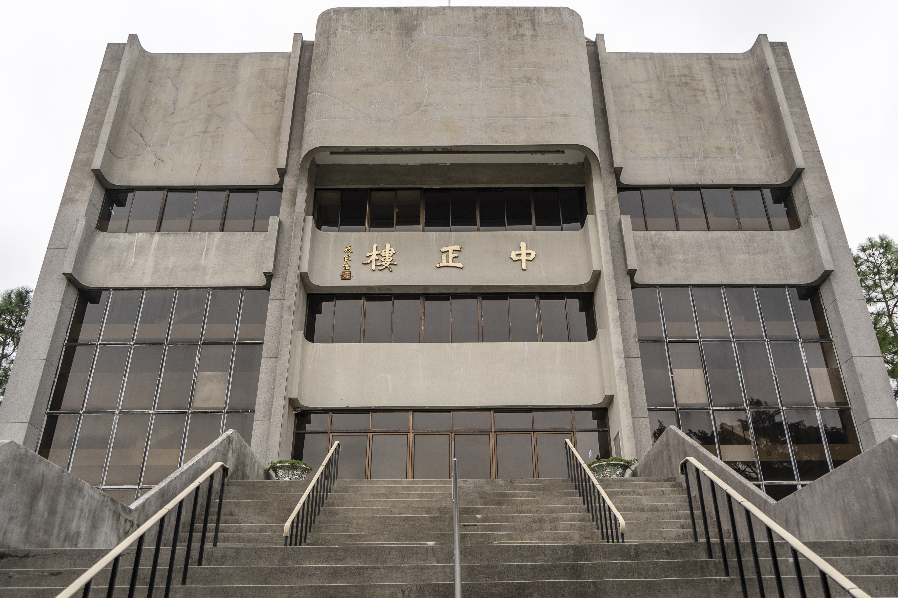

☘熱誠宿舍：
提供大二以上的學生住的宿舍，熱誠十二樓提供了自習室供學生使用，二樓的部分也提供開伙的區域，也有地下停車場。
☘信實宿舍：
提供大二以上的學生住的宿舍，有提供健身房、桌球室、撞球室、籃球機。
 |
 |
☘力行宿舍：
中原大學安排大一新生住的宿舍（男生），位於新中北路上，房型分為４至６人房。
☘良善宿舍:
中原大學提供大一女生住的宿舍，鄰近中原夜市，生活機能方便。
☘恩慈宿舍：
中原大學提供大一女生住的宿舍，鄰近中原夜市，生活機能方便。
☘體育館:
位置在力行宿舍的右側，地下一樓有著可供學生免費使用的健身房，一樓有室內羽球、籃球、排球的球場，二樓則有著體育專用教室，例如瑜珈、跆拳道等；游泳池則在體育館正門的右側。
☘全人村：
國內第一座由大學自行募款籌設的「全人教育村」，推廣中原大學所倡導以及力行的全人教育理念與精神，地下室一樓為停車空間，一樓有校友聯絡室、心理輔導中心、健康中心、會議廳、演藝廳、展覽室等；包括校牧室、禮拜堂兼音樂廳，有著許多線上影音資源可供學生使用。
☘生科樓:
位於活動中心的左側，教室多為理學院的實驗室。
☘活動中心：
有著各種社團的教室以及場地可供學生借用，地下一樓是學生餐廳與麥當勞，一樓有著演藝廳，二樓有專用性教室，如需辦活動可供借用，三、四樓則是社團的教室及場地。
☘張靜愚圖書館：
位於懷恩樓後側，一樓為行政單位處室，二樓是出入口、借還書櫃台，三、四、五樓則為三（西文圖書），四、五（中文圖書），館藏豐富，同學要多加利用唷！
<☘懷恩樓：
中原歷史悠久的一棟樓，一、二樓為教室，一樓的教室只要沒有老師上課，門開著就可供學生自習，時間是二十四小時都開放喔。
☘維澈樓：
地下一樓有停車場，維澈樓一樓櫃台提供教務處、學務處、出納組等服務，一樓也有著星巴克，使校園增添了些咖啡氛圍，而維澈八樓為中原會館，提供舒適豪華的住宿服務，出示與學校有關的證明，就有機會打折唷！
 |
 |
|  |
 |
☘行政大樓：
一樓為校史室，二、三樓為行政辦公室。
☘教學大樓：
地下室一樓為停車空間，一至六樓規劃為教室空間、七樓為電算中心辦公室、資訊機房及專用教室、八樓為教務處試務中心及專用教室、九樓為推廣中心辦公室。教學大樓真正成為中原師生的教學與學習、教師與學生互動的場地。所有教室都配備有「資訊講桌」，整合了無線上網、多媒體單槍投影、以及無線麥克風等功能，上課教師只要帶著筆記型電腦就可以直接上課，非常便利。其中最特別的是一樓的遠距教學教室，它不僅可以提供同步型校內外視訊教學及會議，更可以提供高品質的數位學習應用設備，以數位白板、資料提示機及電腦網路，取代傳統的黑板教學，可謂是「未來資訊化教室」的典範。
 |
 |
|  |
 |
|  |
 |
☘中正樓：
大部分的校園演講、演唱會都會在此舉辦，地下室則有239坪的大空間(多隔間舞蹈教室、多功能活動區，休憩討論區、社團辦公室)，可供社團練習與討論。

☘資管樓:
為資管系專用的一棟大樓，有著電腦教室、專題教室、物聯網創課基地、會議室，可供課後小組討論報告。
☘商設館：
位於資管樓的右側，許多設計系的學生作品集會展示在館內。
☘商學、管理大樓：
位於資管樓後方，有著商學講堂，提倡沒有壓力的優質空間，讓進入空間的人可以感覺到豐富的層次性，並在照明、色彩與材料的使用上，提供使用者感動的學習、交流空間，未來可增設同步翻譯及多媒體系統等擴充設備空間，打造全方位的專業講堂。
☘工學館：
位於商學大樓的右側，有著環境科技研發中心，向外爭取建教、研發案件。
☘土木館：
位於室設館的左側，擁有完善之實驗設備，諸如工程材料試驗室、水力工程實驗室、結構實驗室、土壤力學實驗室、測量儀器室等。
擁有獨立之系館1700坪，符合本系所有的教學、實驗及研究所需。另於系館旁增設實驗空間約70坪。
- 擁有獨立之系館1700坪，符合本系所有的教學、實驗及研究所需。另於系館旁增設實驗空間約70坪。
- 實驗設備每年持續增購及更新，並維持高度之使用率。
- 研究生有專用之研究空間。
- 教學視聽器材如投影機、幻燈機、錄放影機、電視機、微式麥克風等一律俱全。
- 系館擁有可容納200人之講堂一處，以供演講之用；其中空調、放映及音響設備齊全。
- 本系所有相關國內外圖書文獻皆存於本校圖書館。目前有關工程及科學方面之書籍，計有十二萬冊以上,有關土木及水利之專業藏書亦有萬餘冊。土木水利工程相關之國內外學術期刊，計有五十八種
☘莊敬大樓:
☘科學館理學大樓:
☘化學館：
本系畢業的校友以進修研究及就業為兩大主要的出路，其進修的管道包含：化學、化工、環境工程、材料科學、核子工程、藥學、生物化學、污染防治、輻射生物、海洋化學等相關領域研究所；本系畢業系友之就業管道相當豐富，如在台積電、聯電等知名半導體公司及生物科技、奈米科技等產業界工作；同時亦有在各大化學廠、化工廠之研究發展、生產及管理部門服務，從事化學藥品及儀器之行銷，環保工作中之檢驗廢棄物處理；另外在各級學校擔任老師（，亦有系友擔任公務機關研究分析及行政部門之工作。
☘篤信電學大樓:
☘：
☘：
☘：
☘：